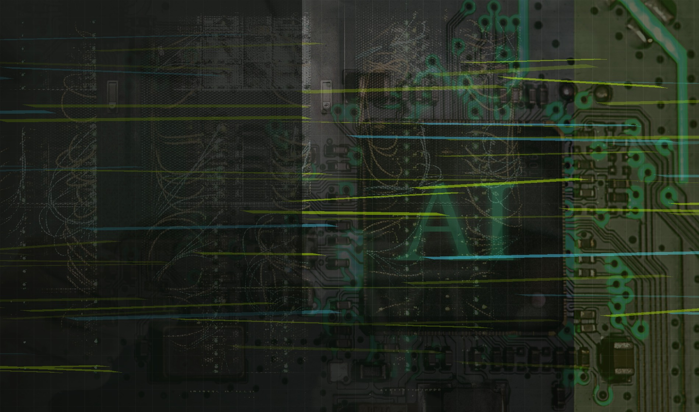
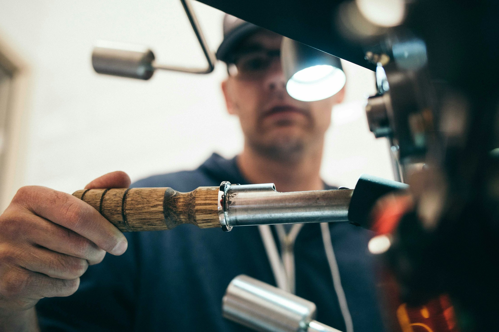
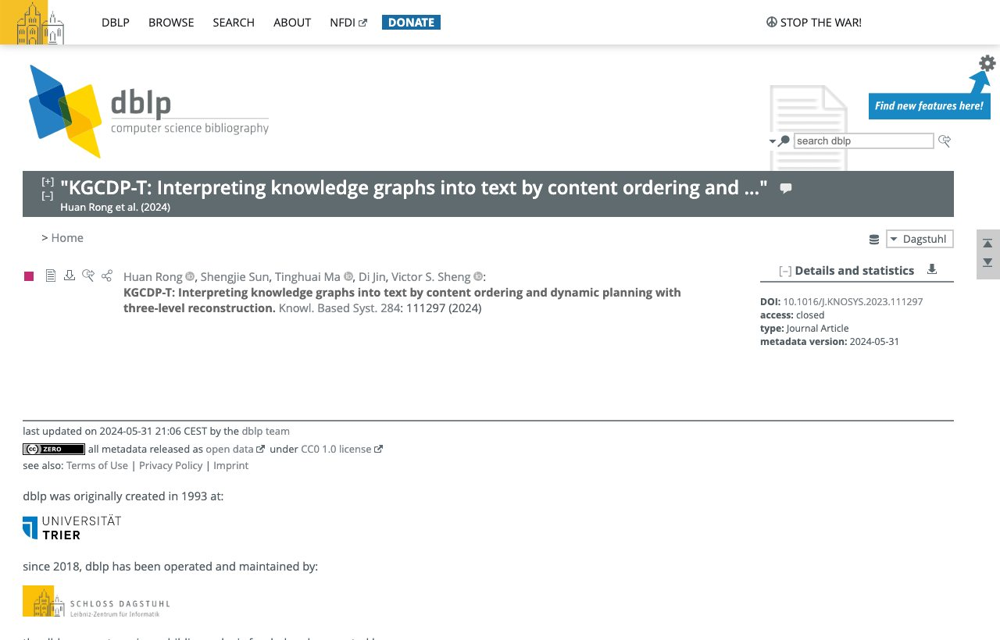
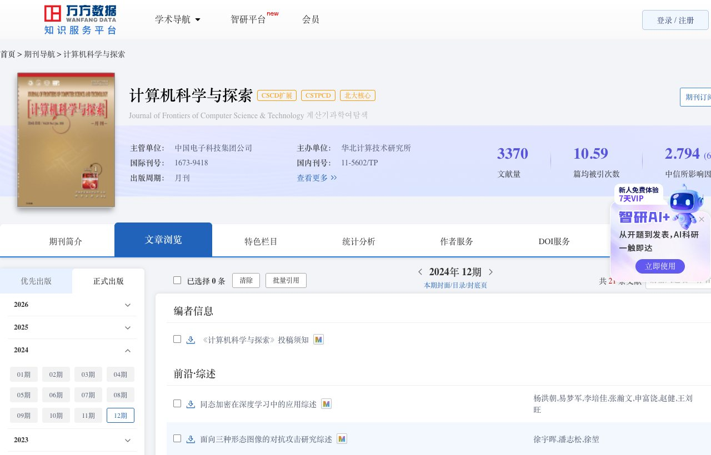
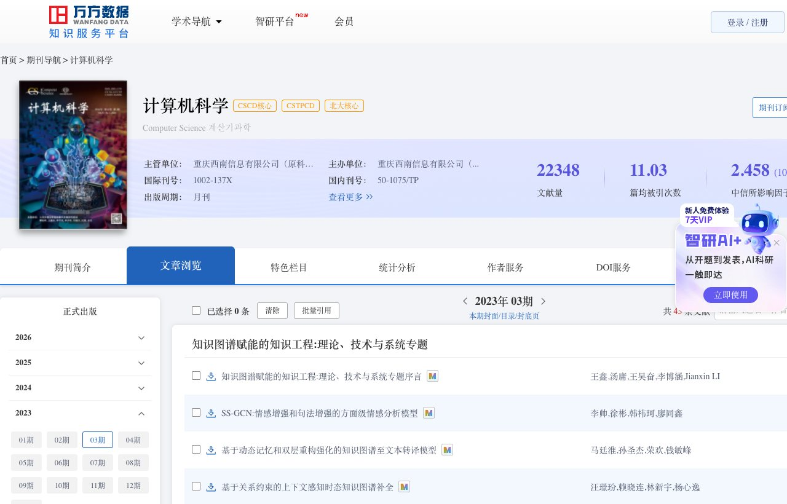
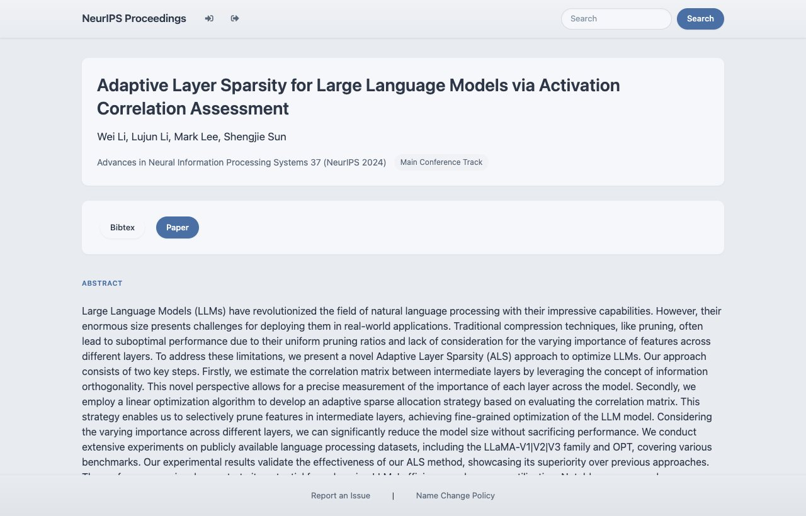
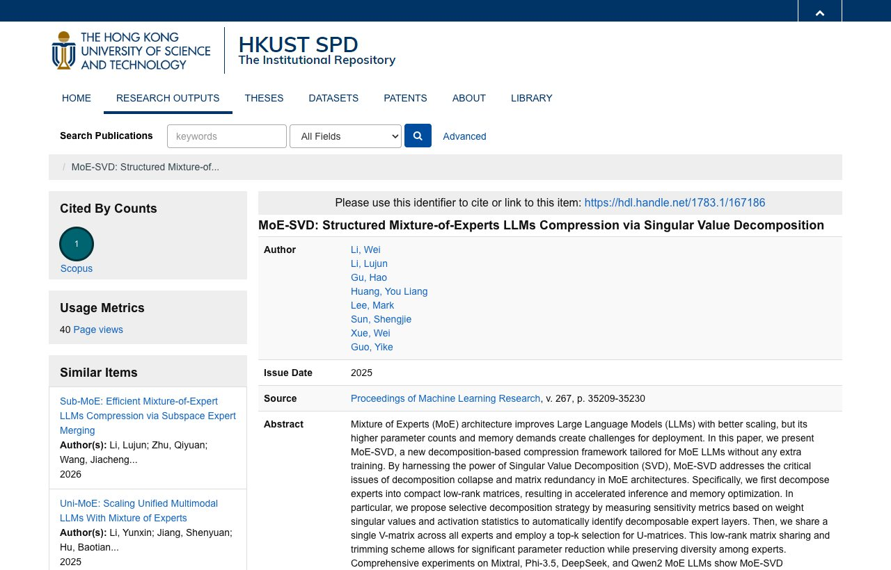
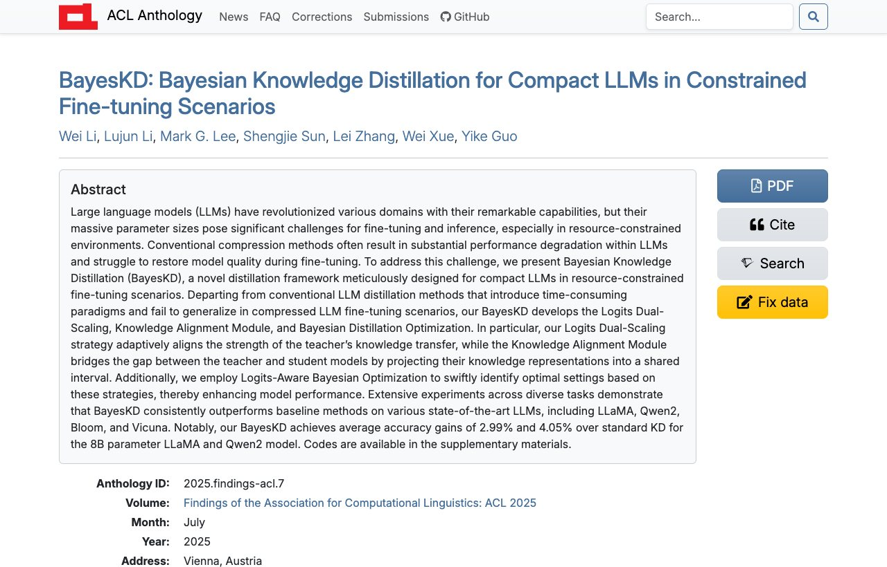
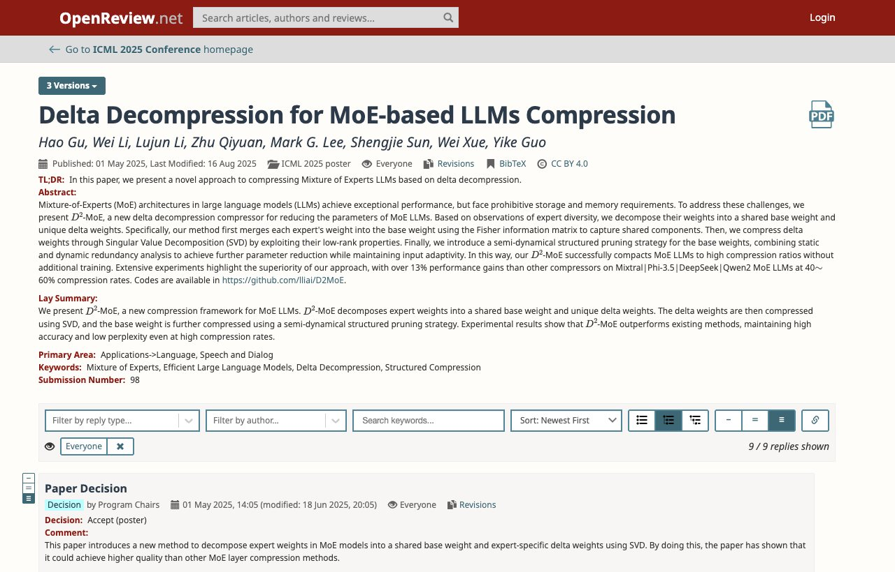
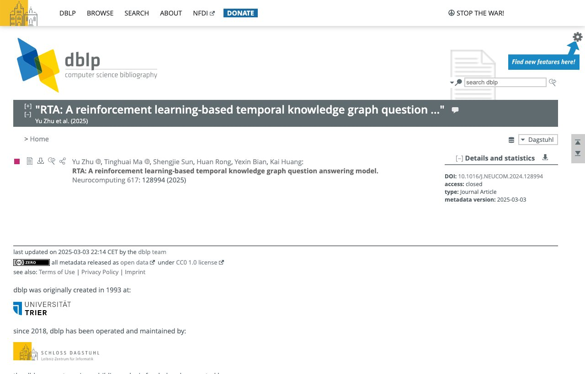

思必驰科技股份有限公司
大模型算法工程师，负责业务相关模型训练、部署、测试、更新与上线全流程。
训练
部署
车载
从论文到集群，从训练到上线，重点不是把模型跑起来，而是让 训练效率、推理延迟、车载体验和 端侧实时响应一起经得起量产场景验证。
大模型算法工程师，负责业务相关模型训练、部署、测试、更新与上线全流程。
持续追踪前沿论文，判断算法是否真的适合业务落地。
贡献获得团队认可，助力团队于 2024 年获得优秀研发团队奖。
主导解决 IOV 部门关键技术挑战，获得部门书面致谢。

01DeepSpeed、Megatron-LM、LLaMAFactory、MindSpeed-LLM，覆盖 A800 与昇腾训练适配。

02vLLM、SGLang、ImDeploy、MindIE、RAG、S-Lora、Function Call 与车载端侧量产。
把简历里的长项目压成更适合网页阅读的战绩面板：先看主成果，再展开细节。
车载主线项目的结果面板：业务效果、数据缩减与量产落地集中看，不在左侧重复展开过程。
基于 A800 百卡集群，主导 7B-110B Dense 模型与 235B MoE 模型演进训练。
适配 MindSpeed-LLM、LLaMAFactory、DeepSpeed-Chat 等训练框架，构建容器环境并适配调度启动方式。
实现 MCPhub 代理，支持多 MCP 服务集成、分组管理、自定义工具描述、单工具禁用和 Toollist 缓存。
调研主流端侧芯片并测试 LLaMA.cpp、MCL-LLM，多进程大核绑定提升 3.3 倍吞吐，首 Token 延迟降低 67%。
不只追求模型榜单分数，更关注训练成本、推理延迟、车载体验和业务交付。
从代码实现到训练框架、并行策略、推理加速和量化部署。
南京信息工程大学硕士，研究方向：自然语言处理、大语言模型、知识图谱。主线工作聚焦知识图谱到文本、知识增强推理与大模型压缩部署。
硕士阶段聚焦自然语言处理、知识图谱、知识增强推理，把科研训练沉淀成后续大模型工程落地的底层方法。
从知识图谱到文本、时序知识问答，到大模型压缩、蒸馏与 MoE 结构化裁剪，持续追踪可落地的研究路径。

Knowledge-Based Systems · 2024 KGCDP-T: Interpreting knowledge graphs into text by content ordering and dynamic planning with three-level reconstructionRong H, Sun S, Ma T, et al.
Open paper
计算机科学与探索 · 2024 融合干预与反事实的知识感知型去偏推理模型孙圣杰，马廷淮，黄凯
Search paper
计算机科学 · 2023 基于动态记忆和双层重构强化的知识图谱至文本转译模型马廷淮，孙圣杰，荣欢，钱敏峰
Search paper
NeurIPS · 2024 Adaptive Layer Sparsity for Large Language Models via Activation Correlation AssessmentWei Li, Lujun Li, Mark Lee, Shengjie Sun
Open paper
ICML · 2025 MoE-SVD: Structured Mixture-of-Experts LLMs Compression via Singular Value DecompositionWei Li, Lujun Li, Haokun Gu, et al.
Open record
ACL Findings · 2025 BayesKD: Bayesian Knowledge Distillation for Compact LLMs in Constrained Fine-tuning ScenariosWei Li, Lujun Li, Mark G. Lee, Shengjie Sun, et al.
Open paper
ICML · 2025 Delta Decompression for MoE-based LLMs CompressionHaokun Gu, Wei Li, Lujun Li, et al.
Open paper
Neurocomputing · 2025 RTA: A reinforcement learning-based temporal knowledge graph question answering modelZhu Y, Ma T, Sun S, et al.
Open paper桑晨扬，马廷淮，谢欣彤，孙圣杰，黄锐
Search paper健身、骑行、羽毛球、壁球、登山、抱石。保持体能，也保持长期学习和拆解复杂系统的耐心。